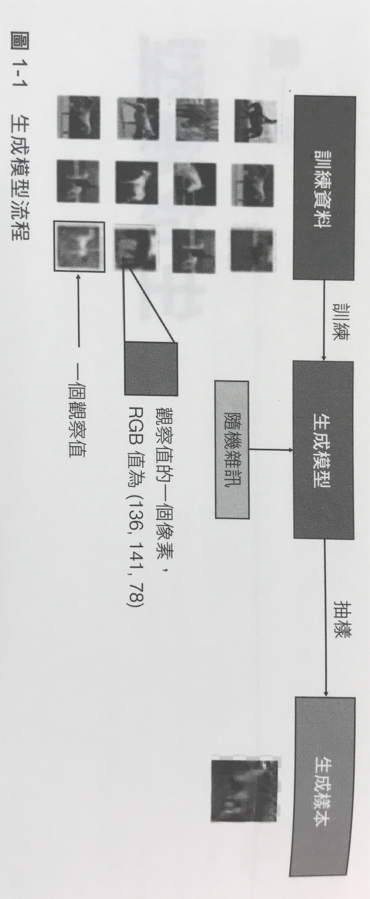

生成對抗網路
Table of Contents

1. GAN
生成對抗網路是由蒙特婁大學的研究生伊思・古德費洛(Ian Goodfellow)所發明。2014年的一個晚上，Goodfellow和他的幾個朋友去了當地的一家酒館，他們討論到打造可以生成高畫質圖像的深度學習系統會碰到到的問題。在喝了不知道多少啤酒後，Goodfellow提出了生成對抗網路背後的基本概念，但受到了其他人很大的質疑。之後，Goodfellow一回到家立即開始寫程式。幾個小時內，他就有了第一個功能強大的生成對抗網路。這個成就使Goodfellow成為深度學習社群的傳奇人物。Meta首席AI科學家楊立昆表示，生成對抗網路是「深度學習領域過去二十年來最酷的概念」1。
GAN（Generative Adversarial Network）是一種生成模型，透過兩個神經網路互相競爭來生成新的資料。這兩個網路分別是生成器（Generator）和鑑別器（Discriminator）。生成器負責生成新的資料，而鑑別器則負責判斷資料是真實的還是由生成器生成的。這種對抗性訓練使得生成器能夠逐漸提高其生成資料的質量。
2. 生成模型與鑑別器
生成模型和鑑別器是機器學習中兩種不同的模型類型，它們在處理資料的方式和目標上有所不同。
2.1. 鑑別器
- 鑑別器是以 決定型模型 的方式來描述資料集的 分類方式 。對這個模型抽樣就可以得到一個分類結果。
- 例如：建置一個包含了許多馬匹的影像資料庫，我們想建一個能鑑別出這些馬的模型。
- 首先需要一個有許多馬的資料集，裡面有許多實例(instance)，每個資料點為一個觀察值(observation)
- 每個觀察值都包含了許多特徵（對於圖片來說就是像素值），鑑別器的目標就是建置個能將這些特徵映射到特定類別的模型。
- 鑑別器必須是決定型(deterministic)而非機率型(probabilistic)，如果模型是將所有圖片的像素值取平均，則每次產生的結果就都會相同，這就不是鑑別，模型要包含一個隨機元素來影響其所生成的個別樣本。
- 可以想像有一個未知的機率分配來決定為什麼有些影像比較容易在訓練集資料中找到，有些則否。我們的目標是建置一個模型去盡可能模仿這樣的機率分配，並從中抽樣來生成全新且具鑑別度的觀察值。
- 鑑別器的訓練資料中有許多馬的照片，透過觀察所有照片的特徵值（像素），我們生成一個能描述這些特徵值的機率分配，並用這個機率分配來鑑別一張圖片是否為馬。鑑別器通常是搭配有標籤資料集學會一個 可將輸入映射到特定輸出的映射函數 。
- 鑑別器的估計值為 \(p(y|x)\)，即，觀察到 \(x\) 時其標籤為 \(y\) 的機率，鑑別器會試著去估計出某個觀測值 \(x\) 屬於類別 \(y\) 的機率。
- 鑑別器的應用包括：圖像分類、語音識別、文本分類等。
2.2. 生成器
生成器和鑑別器的主要區別在於它們的目標和處理方式。生成器的目標是生成新的資料，而鑑別器的目標是分類或鑑別資料。以下是生成器的詳細說明：
- 生成器是以 機率模型 的方式來描述資料集的 產生方式 。對這個模型抽樣就可以生成新的資料。
- 例如：建置一個包含了許多馬匹的影像資料庫，我們想建一個能生成 未出現過的、逼真的馬 的模型。
- 首先需要一個有許多馬的資料集，裡面有許多實例(instance)，每個資料點為一個觀察值(observation)
- 每個觀察值都包含了許多特徵（對於圖片來說就是像素值），生成器的目標就是建置個能生成多組新特徵的模型，讓這個新特徵看起來和原始資料很類似。
- 生成器必須是機率型(probabilistic)而非決定型(deterministic)，如果模型是將所有圖片的像素值取平均，則每次產生的結果就都會相同，這就不是生成，模型要包含一個隨機元素來影響其所生成的個別樣本。
- 可以想像有一個未知的機率分配來決定為什麼有些影像比較容易在訓練集資料中找到，有些則否。我們的目標是建置一個模型去盡可能模仿這樣的機率分配，並從中抽樣來生成全新且具鑑別度的觀察值。
- 很難當比賽題目，因為做出來的都是假的，不易評分
- 生成器的訓練資料中有許多馬的照片，透過觀察所有照片的特徵值（像素），我們生成一個能描述這些特徵值的機率分配，並用這個機率分配來生成一張全新的圖片。生成器通常是搭配無標籤資料集學會一個 可將輸入映射到特定輸出的映射函數 。
- 生成器的應用包括：圖像生成、文本生成、音樂生成等。
2.3. 生成器與鑑別器的比較
生成器和鑑別器的主要區別在於它們的目標和處理方式。生成器的目標是生成新的資料，而鑑別器的目標是分類或鑑別資料。以下是它們的比較：
- **目標**：
- 生成器：生成新的資料，模擬資料的分佈。
- 鑑別器：分類或鑑別資料，估計資料屬於某個類別的機率。
- 生成器：生成新的資料，模擬資料的分佈。
- **資料處理**：
- 生成器：使用無標籤資料集，學習資料的特徵分佈。
- 鑑別器：使用有標籤資料集，學習如何將輸入映射到特定輸出。
- 生成器：使用無標籤資料集，學習資料的特徵分佈。
- **模型類型**：
- 生成器：機率模型，包含隨機元素。
- 鑑別器：決定型模型，通常是監督式學習。
- 生成器：機率模型，包含隨機元素。
- **應用**：
- 生成器：圖像生成、文本生成、音樂生成等。
- 鑑別器：圖像分類、語音識別、文本分類等。
- 生成器：圖像生成、文本生成、音樂生成等。
2.4. 生成器與鑑別器的訓練
生成器和鑑別器的訓練是生成對抗網路（GAN）中的核心部分。它們之間的訓練過程是對抗性的，以下是它們的訓練流程：
- **初始化模型**：首先，初始化生成器和鑑別器的神經網路模型。
- **訓練鑑別器**：
- 從真實資料集中抽取一批真實樣本。
- 使用生成器生成一批假樣本。
- 將真實樣本和假樣本一起輸入到鑑別器中。
- 計算鑑別器對真實樣本的預測和對假樣本的預測，並計算損失函數。
- 更新鑑別器的權重，使其能更好地區分真實樣本和假樣本。
- 從真實資料集中抽取一批真實樣本。
- **訓練生成器**：
- 從隨機噪聲中生成一批假樣本。
- 將這些假樣本輸入到鑑別器中，並計算鑑別器對這些假樣本的預測。
- 計算生成器的損失函數，這個損失函數通常是鑑別器對假樣本的預測結果。
- 更新生成器的權重，使其能生成更逼真的樣本，以騙過鑑別器。
- 從隨機噪聲中生成一批假樣本。
- **迭代訓練**：重複步驟2和3，直到生成器能生成足夠逼真的樣本，或者達到預定的訓練次數。
3. 生成器
- 生成器是以 機率模型 的方式來描述資料集的 產生方式 。對這個模型抽樣就可以生成新的資料。
- 例如：建置一個包含了許多馬匹的影像資料庫，我們想建一個能生成 未出現過的、逼真的馬 的模型。
- 首先需要一個有許多馬的資料集，裡面有許多實例(instance)，每個資料點為一個觀察值(observation)
- 每個觀察值都包含了許多特徵（對於圖片來說就是像素值），生成器的目標就是建置個能生成多組新特徵的模型，讓這個新特徵看起來和原始資料很類似。
- 生成器必須是機率型(probabilistic)而非決定型(deterministic)，如果模型是將所有圖片的像素值取平均，則每次產生的結果就都會相同，這就不是生成，模型要包含一個隨機元素來影響其所生成的個別樣本。
- 可以想像有一個未知的機率分配來決定為什麼有些影像比較容易在訓練集資料中找到，有些則否。我們的目標是建置一個模型去盡可能模仿這樣的機率分配，並從中抽樣來生成全新且具鑑別度的觀察值。
- 很難當比賽題目，因為做出來的都是假的，不易評分
3.1. 生成器與鑑別器
生成器的訓練資料中有許多馬的照片，透過觀察所有照片的特徵值（像素），我們生成一個能描述這些特徵值的機率分配，並用這個機率分配來生成一張全新的圖片。生成器通常是搭配無標籤資料集學會一個 可將輸入映射到特定輸出的映射函數 。

對鑑別器來說，訓練資料中的每個觀察值（instance）都有對應的label（如，這張是否為梵谷的畫），如此這個模型就能學習如何鑑別這兩個群組，因此，我們可以將之視為監督式學習。
Figure 1: 鑑別器處理流程
鑑別器的估計值為 \(p(y|x)\)，即，觀察到 \(x\) 時其標籤為 \(y\) 的機率，鑑別器會試著去估計出某個觀測值 \(x\) 屬於類別 \(y\) 的機率。
3.2. 生成器的框架: 兩維度的生成器遊戲
4. Keras GAN
5. 應用領域
- PairedCycleGAN
- TwinGAN
- Paired
- GigGANs
- Image-to-Text
- Text-to-Image
- 繪圖
- 書寫
- 作曲
- 遊戲
6. DCGANs
- 使用 strided convolutions 取代 pooling layers
- 移除全連接層 fully
7. DeepLearning 的 convolution 動畫
8. 比賽只有 CNN v.s. RNN
9. ideas
- 文字 -> POP
- 有一種應用是將照片中的衣服移除，那，如何判別是真的沒穿衣服還是被 GAN 產生的
- ZARA：把衣服套在人身上
- 如何 judge 一張圖是生成的還是真實的
- Pix2pix: 黑白照片轉彩色、畫輪廓轉照片(圖片)(Paired)、給照片轉 3D
- 把同一張照片轉成各種畫家的畫風
- Explaining and Harnessing Adversarial Examples: Goodfellow
把一張圖片特意加上噪點，結果使得 AI 的判斷確認為其他圖
後果：可能影響自駕車的安全…..